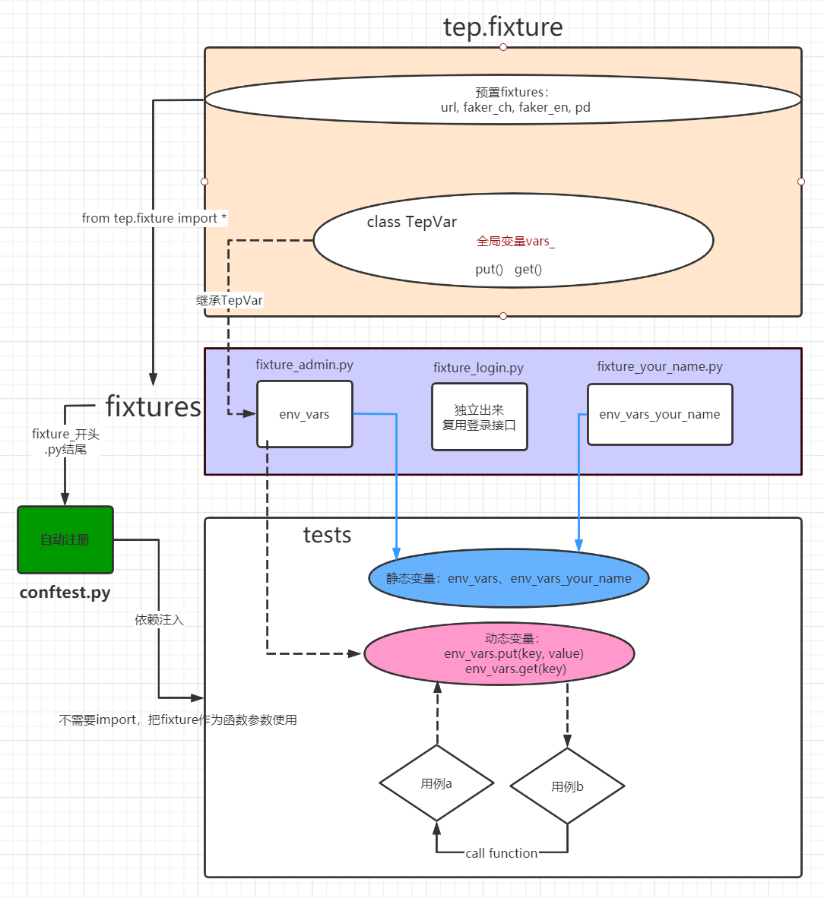
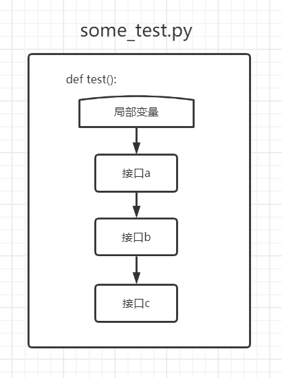
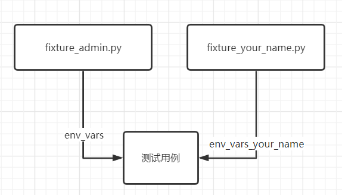
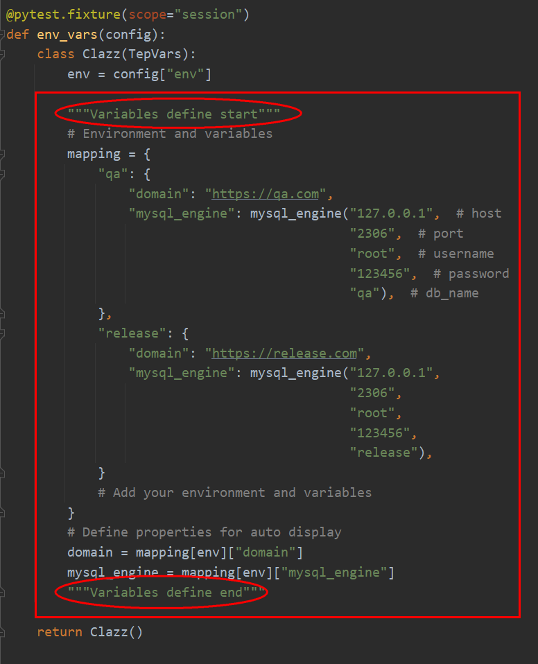
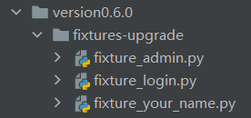
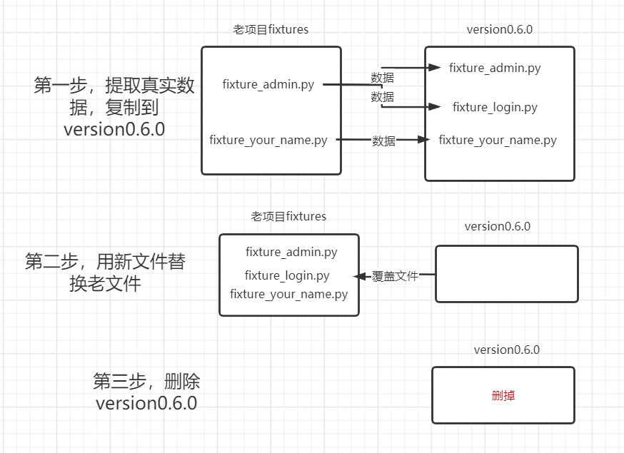

本书作者：测试开发刚哥，文章版权归个人所有，未经授权请勿转载。
tep是一款测试工具，在pytest测试框架基础上集成了第三方包，提供项目脚手架，帮助以写Python代码方式，快速实现自动化项目落地。fixture是pytest核心技术，本文聊聊如何使用fixture完成变量、接口、用例3个级别复用。
技术原理
fixture是一种特殊函数，实现了依赖注入，pytest规定，只要在conftest.py模块中定义了fixture，作为参数传给测试函数test(fixture_name)就可以使用，无需import。tep在conftest.py上封装了一层fixtures，类似于Django初始化数据加载的fixtures，定义了env_vars环境变量，预置了登录接口等。整体思路如下图所示：
- 实线：表示fixture流转，从
tep.fixture预置fixture，到fixtures，到conftest.py，到tests。 - 虚线：表示动态变量流转，参考JMeter
vars.put()和vars.get()，实现用例级别复用。 - 蓝色线：表示静态变量流转，参考JMeter
自定义用户变量，实现变量级别复用。

tep.fixture
tep.fixture第一块内容是预置fixture的实现代码，如url、faker_ch等，对使用者隐藏。第二块内容是类TepVar，预置了1个Python字典vars_和2个存取方法put()、get()，划分了一块key-value形式存储区域。
fixtures
fixtures是一个包，里面包括多个fixture_*.py格式的Python模块，定义的全部都是fixture，只对外提供fixture，不提供function。
自动注册
conftest.py是pytest的特殊文件，文件名固定，tep在其中实现了自动注册功能，它会自动查找fixtures目录下，所有以fixture_开头，以.py结尾的Python模块进行导入，无需手动添加。注册后，tests才能够找到fixtures中定义的fixture，否则报错fixture not found。
tests
tests存放所有测试用例，tep建议每个Python模块中只定义1个test()函数，用例分离，独立运行。
参考了
HttpRunner每个yaml文件1条用例的做法。复杂场景可以定义多个测试test()函数或Test类，pytest都支持。
使用示例
变量级别复用
函数局部变量
import jmespath
from loguru import logger
from tep.client import request
def test_post(faker_ch, url, login):
# description
logger.info("test post")
# data
fake = faker_ch
# request
response = request(
"post",
url=url("/api/users"),
headers=login.jwt_headers,
json={
"name": fake.name()
}
)
# assert
assert response.status_code < 400
# extract
user_id = jmespath.search("id", response.json())
函数内部变量，作用域是整条测试用例，可以在多个接口之间进行复用，比如参数化和关联：

全局环境变量
#!/usr/bin/python
# encoding=utf-8
""" Can only be modified by the administrator. Only fixtures are provided.
"""
from tep.dao import mysql_engine
from tep.fixture import *
@pytest.fixture(scope="session")
def env_vars(config):
class Clazz(TepVars):
env = config["env"]
"""Variables define start"""
# Environment and variables
mapping = {
"qa": {
"domain": "https://qa.com",
"mysql_engine": mysql_engine("127.0.0.1", # host
"2306", # port
"root", # username
"123456", # password
"qa"), # db_name
},
"release": {
"domain": "https://release.com",
"mysql_engine": mysql_engine("127.0.0.1",
"2306",
"root",
"123456",
"release"),
}
# Add your environment and variables
}
# Define properties for auto display
domain = mapping[env]["domain"]
mysql_engine = mapping[env]["mysql_engine"]
"""Variables define end"""
return Clazz()
@pytest.fixture
def project_level():
pass
使用：
def test(env_vars, env_vars_your_name):
print(env_vars.common_var)
print(env_vars_your_name.my_var)
全局环境变量由fixtures提供：

核心数据是env_vars.Clazz类里面的mapping、domain、mysql_engine等属性：

这么做的目的是为了在PyCharm中敲代码，输入.后能自动带出来，提高编码效率。
fixture_admin.py建议由管理员维护项目级别的公共变量，fixture_your_name.py由团队成员定义自己的环境变量，避免冲突。它们还有一个区别是fixture_admin.py的env_vars继承了tep.fixture.TepVar，支持env_vars.put()和env_vars.get()。
变量都由
fixture提供。
接口级别复用
tep预置登录接口fixture_login.py已经实现了接口级别复用，其他接口可以参照实现：
from tep.client import request
from tep.fixture import *
def _jwt_headers(token):
return {"Content-Type": "application/json", "authorization": f"Bearer {token}"}
@pytest.fixture(scope="session")
def login(url):
# Code your login
logger.info("Administrator login")
response = request(
"post",
url=url("/api/users/login"),
headers={"Content-Type": "application/json"},
json={
"username": "admin",
"password": "123456",
}
)
assert response.status_code < 400
response_token = jmespath.search("token", response.json())
class Clazz:
token = response_token
jwt_headers = _jwt_headers(response_token)
return Clazz
使用：
from loguru import logger
def test_login(login):
logger.info(login.token)
用例级别复用
a_test.py，定义1条测试用例test_a()，使用faker_ch生成随机name，通过env_vars.put()方法写入TepVar.vars_中：
def test_a(faker_ch, env_vars):
name = faker_ch.name()
env_vars.put("name", name)
reuse_a_test.py，定义另外1条测试用例test()，import test_a后手动调用执行，从TepVar.vars_中读取name：
from tests.sample.case_reuse.a_test import test_a
def test(faker_ch, env_vars):
test_a(faker_ch, env_vars)
print(env_vars.get("name"))
注意
test_a()函数参数引用的所有fixture，需要在test()函数参数中重新申明一遍，比如示例中的(faker_ch, env_vars)。
tep是借助conftest.py和fixture，用类变量来做的，参考了JMeter BeanShell的vars。
也可以外接
redis。
tep0.6.0更新
tep用户手册是根据0.5.3版本写的，现在更新了0.6.0版本，一是支持本文提到的3个级别复用，微调了fixtures，二是把项目脚手架代码尽量封装到tep中，减少后续升级成本。涉及到4个文件：conftest.py、fixture_admin.py、fixture_login.py、fixture_your_name.py。
更新tep
pip install tep==0.6.0
- 如果还没有用过tep，使用这条命令安装后，执行
tep startproject project_name就可以创建0.6.0版本的项目脚手架，包含了预置代码结构和sample测试用例。 - 如果已经安装了tep，也需要执行这条命令升级
0.6.0版本。
老项目升级（可选）
老项目升级也很简单，先在项目根目录执行命令：
tep -U
它会自动替换conftest.py，考虑到老项目fixtures已经有真实数据了，这里给出了version0.6.0文件包，命令执行后在项目根目录生成：

把老项目的真实数据提取出来，手动替换一下就可以了：

小结
本文介绍了如何使用pytest测试框架实现变量、接口、用例3个级别复用，给出了在tep中的使用示例，然后提供了安装升级tep0.6.0的方法。这套思路借鉴了JMeter和HttpRunner的部分设计思想，以及我使用过的接口测试平台经验，在pytest上实践了一下。tep只是测试工具，本质上还是写pytest，感兴趣可以试一下哦。
参考资料：